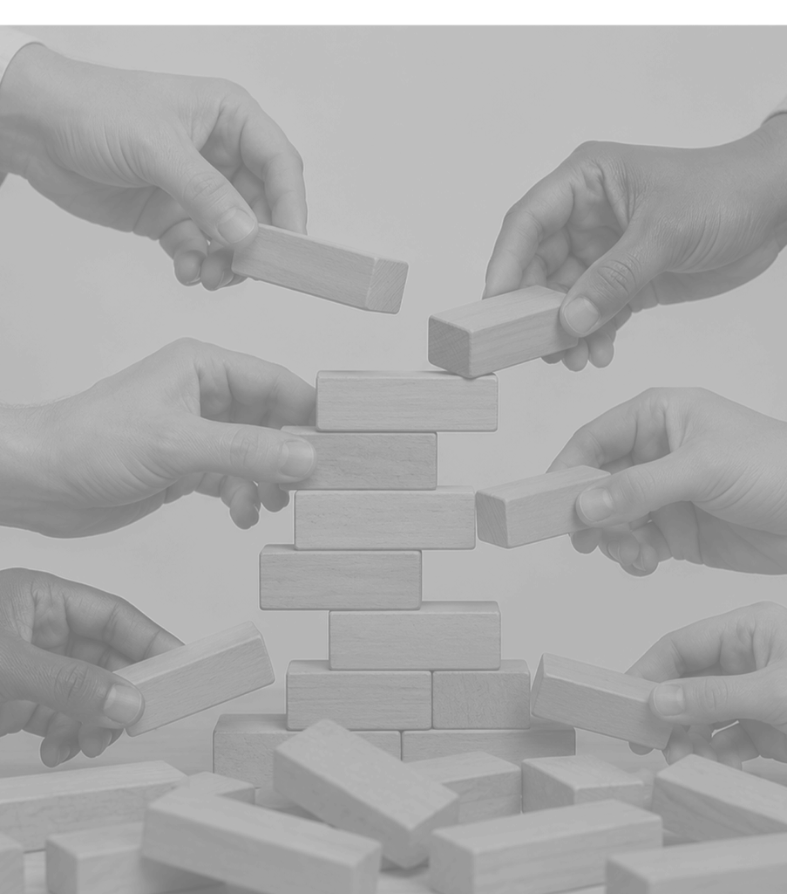

수많은 미완성 폴더를 달고 모인 팀 '낫 배드(Not Bad)'입니다. 우리는 완벽주의의 강박을 버리고, 엉망진창인 실패를 재료 삼아 다시 유쾌하게 시작하는 법을 연구합니다.
우리가 만든 건 결과물이 아니라 과정이었습니다. 저장도 못 한 파일들, 이름도 없는 폴더들, 끝까지 가지 못한 아이디어들. 그 모든 것이 쓰레기가 아니라 재료였다는 걸, 우리는 뒤늦게, 그리고 함께 알았습니다. 낫 배드는 반성을 핑계 삼는 팀이 아닙니다. 실패를 멈추지 않기 위해 모인 팀입니다.
일단 저지르고 봅니다. 수습은 미래의 우리가 하겠죠
시작의 달인이자 트러블메이커. 완벽함보다는 빠른 실행을 가장 중요하게 생각하는 리더입니다. 팀 내에서 두려움 없이 첫 발을 내딛는 과감한 실행력을 담당하며, 실패의 과정 속에서 브랜드의 핵심 재미와 영감을 찾아냅니다.
망한 프로젝트요? 그거 나쁘지 않은데? 다시 살려봅시다
죽은 아이디어에 심폐소생술을 하는 부활의 아이콘입니다. 남들이 포기하고 서랍에 넣어둔 기획에서 기막힌 장점을 귀신같이 찾아냅니다. 팀 내에서 무너진 멘탈을 수습하고, 실패를 유머로 승화시키는 '회복탄력성'을 담당합니다.
완벽해야 한다는 압박감에 갇힌 사람들에게 실패를 숨기지 않고 당당하게 꺼내놓을 수 있는 심리적 안전망을 구축합니다. 미완성 상태가 부끄러움이 아닌 위대한 부활의 스토리가 되는 '낫 배드' 생태계를 완성해 나갑니다. 누군가의 작은 실패가 또 다른 누군가의 시작을 위한 도구, 그 연결고리가 될 때 실패가 자랑이 되는 문화를 만듭니다. 우리는 미완성의 가치를 팝니다.